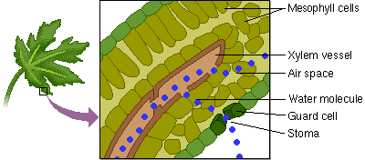

There are hundreds of stomata in the epidermis of a leaf. Most are located in the lower epidermis. This reduces water loss because the lower surface receives less solar radiation than the upper surface. Each stoma allows the carbon dioxide necessary for photosynthesis to enter, while water evaporates through each one in transpiration.
Now that you have been introduced to the concept of transpiration, the questions on the following page will help you understand how the properties of water and water potential are important to this process.
 Continue to Test Yourself.
Continue to Test Yourself.